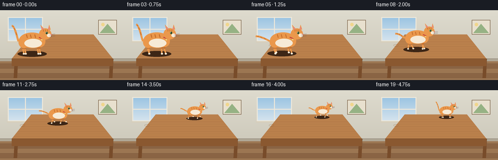
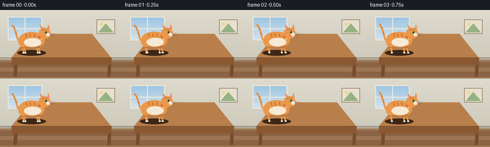
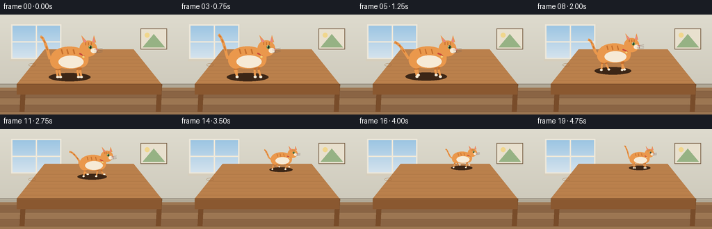
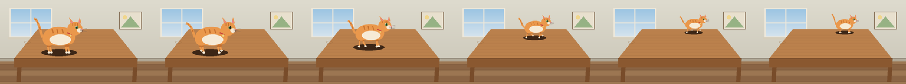

CODING AGENTS AS PIXEL WORLD MODELS
traex/Seed-2.1-Pro-0915 · dynamic_spatial_relationship_0013
点击播放 · 原生 RGB 像素
逐轮保存的候选
回放视频、检查图与代码变化。
每份候选均可单独播放。实际图片检查记录在下方工具轨迹中。
候选 01播放与检查图
点击播放 · 原生 RGB 像素


展开代码变化
--- 上一保存版本
+++ 本次保存版本
@@ -0,0 +1,267 @@
+"""Procedural text-to-video: a cat on a table runs to the back of the table.
+
+Renders 20 RGB frames (256x144 @ 4fps) entirely with PIL/numpy geometry:
+a perspective wooden table in a room, and an articulated side-profile tabby
+cat that trots from the front of the tabletop toward the back edge.
+"""
+import math
+from pathlib import Path
+
+import numpy as np
+from PIL import Image, ImageDraw
+
+import artifact_io
+
+CASE_DIR = Path(__file__).parent
+W, H, N, FPS = 256, 144, 20, 4.0
+SS = 3 # supersampling factor for antialiasing
+
+# ---------------------------------------------------------------- palette
+WALL_TOP = (222, 219, 206)
+WALL_BOT = (206, 202, 188)
+FLOOR_A = (156, 118, 82)
+FLOOR_B = (138, 100, 68)
+WOOD_TOP = (186, 128, 76)
+WOOD_GRAIN = (150, 98, 54)
+WOOD_EDGE = (120, 76, 42)
+APRON = (138, 88, 48)
+CAT_FUR = (234, 152, 76)
+CAT_FUR_D = (198, 112, 46)
+CAT_CREAM = (246, 234, 214)
+CAT_PINK = (232, 132, 132)
+CAT_EYE = (96, 148, 78)
+COLLAR = (200, 70, 60)
+
+
+def lerp(a, b, t):
+ return a + (b - a) * t
+
+
+def draw_gradient(draw, y0, y1, c0, c1):
+ for y in range(y0, y1):
+ t = (y - y0) / max(1, (y1 - y0))
+ draw.line([(0, y), (W * SS, y)],
+ fill=tuple(int(lerp(c0[i], c1[i], t)) for i in range(3)))
+
+
+def scene_background(img):
+ draw = ImageDraw.Draw(img)
+ draw_gradient(draw, 0, 104 * SS, WALL_TOP, WALL_BOT)
+ # floor with plank bands
+ for y in range(104 * SS, H * SS):
+ band = ((y // (10 * SS)) % 2)
+ c = FLOOR_A if band == 0 else FLOOR_B
+ draw.line([(0, y), (W * SS, y)], fill=c)
+ for y in range(110 * SS, H * SS, 10 * SS):
+ draw.line([(0, y), (W * SS, y)], fill=(110, 78, 50))
+ # baseboard
+ draw.rectangle([0, 100 * SS, W * SS, 105 * SS], fill=(176, 168, 150))
+ draw.line([(0, 100 * SS), (W * SS, 100 * SS)], fill=(140, 132, 118), width=SS)
+
+ # window with sky gradient and frame
+ x0, y0, x1, y1 = 16 * SS, 14 * SS, 88 * SS, 64 * SS
+ for y in range(y0, y1):
+ t = (y - y0) / (y1 - y0)
+ c = (int(lerp(154, 214, t)), int(lerp(196, 228, t)), int(lerp(226, 238, t)))
+ draw.line([(x0, y), (x1, y)], fill=c)
+ draw.rectangle([x0, y0, x1, y1], outline=(238, 232, 218), width=2 * SS)
+ draw.line([((x0 + x1) // 2, y0), ((x0 + x1) // 2, y1)], fill=(238, 232, 218), width=2 * SS)
+ draw.line([(x0, (y0 + y1) // 2), (x1, (y0 + y1) // 2)], fill=(238, 232, 218), width=2 * SS)
+ draw.rectangle([x0 - 2 * SS, y1, x1 + 2 * SS, y1 + 3 * SS], fill=(214, 206, 188))
+
+ # small framed picture on the right
+ px0, py0, px1, py1 = 202 * SS, 20 * SS, 240 * SS, 50 * SS
+ draw.rectangle([px0, py0, px1, py1], fill=(232, 224, 206), outline=(120, 96, 70), width=SS)
+ draw.polygon([(px0 + 3 * SS, py1 - 3 * SS),
+ ((px0 + px1) // 2, py0 + 8 * SS),
+ (px1 - 3 * SS, py1 - 3 * SS)], fill=(150, 178, 132))
+ draw.ellipse([px0 + 6 * SS, py0 + 6 * SS, px0 + 13 * SS, py0 + 13 * SS], fill=(240, 214, 140))
+
+
+def draw_table(img):
+ draw = ImageDraw.Draw(img, "RGBA")
+ fl, fr = (24, 100), (232, 100) # front edge
+ bl, br = (64, 50), (192, 50) # back edge
+ s = SS
+ # legs first (behind apron)
+ for (x_top, x_bot) in ((fl[0] + 6, 30), (fr[0] - 6, 226)):
+ draw.polygon([(x_top * s, 100 * s), ((x_top + 7) * s, 100 * s),
+ (x_bot * s + 5 * s, 140 * s), (x_bot * s - 2 * s, 140 * s)],
+ fill=WOOD_EDGE)
+ # tabletop
+ top = [(fl[0] * s, fl[1] * s), (fr[0] * s, fr[1] * s),
+ (br[0] * s, br[1] * s), (bl[0] * s, bl[1] * s)]
+ draw.polygon(top, fill=WOOD_TOP)
+ # perspective grain lines
+ for i in range(1, 9):
+ d = i / 10.0
+ lx = lerp(fl[0], bl[0], d)
+ rx = lerp(fr[0], br[0], d)
+ yy = lerp(fl[1], bl[1], d)
+ shade = tuple(int(lerp(WOOD_TOP[k], WOOD_GRAIN[k], 0.35 + 0.3 * (i % 2))) for k in range(3))
+ draw.line([(lx * s, yy * s), (rx * s, yy * s)], fill=shade, width=max(1, s // 2))
+ # a subtle wood knot
+ kx, ky = lerp(fl[0], bl[0], 0.55), lerp(fl[1], bl[1], 0.55)
+ draw.ellipse([(kx - 5) * s, (ky - 2) * s, (kx + 5) * s, (ky + 2) * s],
+ outline=WOOD_GRAIN, width=max(1, s // 2))
+ # apron under front edge
+ draw.polygon([(fl[0] * s, fl[1] * s), (fr[0] * s, fr[1] * s),
+ (fr[0] * s, 115 * s), (fl[0] * s, 115 * s)], fill=APRON)
+ draw.line([(fl[0] * s, fl[1] * s), (fr[0] * s, fr[1] * s)],
+ fill=WOOD_EDGE, width=s)
+
+
+def table_position(depth):
+ """Map depth 0 (front) -> 1 (back) to ground point and cat scale."""
+ fx, fy = 66.0, 90.0
+ bx, by = 150.0, 56.0
+ x = lerp(fx, bx, depth)
+ y = lerp(fy, by, depth)
+ scale = lerp(1.0, 0.52, depth)
+ return x, y, scale
+
+
+def smoothstep(t):
+ t = max(0.0, min(1.0, t))
+ return t * t * (3 - 2 * t)
+
+
+def cat_pose(frame):
+ """Return depth, gait phase (rad), and motion amount 0..1."""
+ if frame <= 3:
+ return 0.0, frame * 0.6, 0.0
+ if frame >= 17:
+ return 1.0, 0.0, 0.0
+ p = smoothstep((frame - 4) / 12.0)
+ phase = (frame - 4) * math.pi * 0.95 # trot cycles
+ return p, phase, 1.0
+
+
+def draw_cat(img, gx, gy, sc, phase, motion, frame):
+ """Side-profile cat facing right, ground contact at (gx, gy), scale sc."""
+ layer = Image.new("RGBA", (W * SS, H * SS), (0, 0, 0, 0))
+ d = ImageDraw.Draw(layer)
+ s = SS * sc
+ bob = (abs(math.sin(phase)) * 2.2 * motion + 0.5 * math.sin(frame * 0.9)) * sc
+ lean = 2.5 * motion * sc
+
+ def P(lx, ly):
+ return (gx * SS + (lx + lean) * s, gy * SS + (ly - bob) * s)
+
+ def line(p0, p1, fill, w):
+ d.line([P(*p0), P(*p1)], fill=fill, width=max(1, int(w * s)))
+
+ def ellipse(cx, cy, rx, ry, fill, outline=None):
+ c = P(cx, cy)
+ d.ellipse([c[0] - rx * s, c[1] - ry * s, c[0] + rx * s, c[1] + ry * s],
+ fill=fill, outline=outline)
+
+ # contact shadow on the tabletop
+ sd = ImageDraw.Draw(img, "RGBA")
+ sh_w, sh_h = 30 * sc * SS, 6 * sc * SS
+ sd.ellipse([gx * SS - sh_w, gy * SS - sh_h, gx * SS + sh_w, gy * SS + sh_h],
+ fill=(60, 38, 22, 80))
+
+ # ---- tail (swept back while running, curved up while idle)
+ tail_pts = [(-28, -26)]
+ for i in range(1, 9):
+ u = i / 8.0
+ tx = -28 - u * lerp(14, 26, motion) + 3 * math.sin(phase + u * 2) * motion
+ ty = -26 - math.sin(u * math.pi * 0.5) * lerp(34, 10, motion) \
+ + 2.5 * math.sin(frame * 0.8 + u) * (1 - motion)
+ tail_pts.append((tx, ty))
+ for i in range(len(tail_pts) - 1):
+ line(tail_pts[i], tail_pts[i + 1], CAT_FUR, 4.2)
+ for u in (0.35, 0.6, 0.82):
+ idx = int(u * (len(tail_pts) - 1))
+ a, b = tail_pts[idx], tail_pts[min(idx + 1, len(tail_pts) - 1)]
+ line(a, b, CAT_FUR_D, 1.6)
+
+ # ---- legs: trot, diagonal pairs half a cycle apart
+ leg_defs = [ # hip x, hip y, phase offset
+ (-17, -18, 0.0), # near hind
+ (-13, -18, math.pi), # far hind
+ (13, -18, math.pi), # near front
+ (17, -18, 0.0), # far front
+ ]
+ for hip_x, hip_y, off in leg_defs:
+ ph = phase + off
+ swing = math.sin(ph)
+ foot_dx = swing * 7 * (0.3 + 0.7 * motion)
+ lift = max(0.0, math.sin(ph + 0.5)) * 7 * motion
+ knee = (hip_x + foot_dx * 0.35 - 2, hip_y * 0.55)
+ paw = (hip_x + foot_dx, -lift)
+ line((hip_x, hip_y), knee, CAT_FUR_D, 3.6)
+ line(knee, paw, CAT_FUR, 3.2)
+ pc = P(*paw)
+ d.ellipse([pc[0] - 2.2 * s, pc[1] - 1.6 * s, pc[0] + 2.2 * s, pc[1] + 1.6 * s],
+ fill=CAT_CREAM)
+
+ # ---- body
+ ellipse(0, -28, 27, 16, CAT_FUR)
+ ellipse(-17, -24, 11, 12, CAT_FUR) # haunch
+ ellipse(17, -26, 10, 12, CAT_FUR) # shoulder
+ ellipse(2, -22, 18, 9, CAT_CREAM) # belly
+ # body stripes
+ for sx in (-12, -4, 5):
+ line((sx, -40), (sx + 2, -33), CAT_FUR_D, 2.0)
+
+ # ---- collar
+ line((14, -34), (22, -31), COLLAR, 2.6)
+ tag = P(20, -29)
+ d.ellipse([tag[0] - 1.6 * s, tag[1] - 1.6 * s, tag[0] + 1.6 * s, tag[1] + 1.6 * s],
+ fill=(240, 210, 120))
+
+ # ---- head
+ hx, hy = 27 + 1.5 * motion, -41
+ ellipse(hx, hy, 12.5, 11.5, CAT_FUR)
+ # ears
+ for ex, tilt in ((hx - 7, -1), (hx + 5, 1)):
+ base = P(ex, hy - 8)
+ tip = P(ex + tilt * 3, hy - 19)
+ base2 = P(ex + 6, hy - 9)
+ d.polygon([base, tip, base2], fill=CAT_FUR)
+ ib = P(ex + 1.5, hy - 9)
+ it = P(ex + tilt * 2, hy - 16)
+ ib2 = P(ex + 4.5, hy - 10)
+ d.polygon([ib, it, ib2], fill=CAT_PINK)
+ # head stripes
+ for sx in (hx - 4, hx, hx + 4):
+ line((sx, hy - 9), (sx, hy - 5), CAT_FUR_D, 1.6)
+ # muzzle + nose + mouth
+ ellipse(hx + 8, hy + 3, 4.5, 3.6, CAT_CREAM)
+ nc = P(hx + 12.5, hy + 1.5)
+ d.polygon([(nc[0] - 1.6 * s, nc[1] - 1.2 * s), (nc[0] + 1.6 * s, nc[1] - 1.2 * s),
+ (nc[0], nc[1] + 1.6 * s)], fill=CAT_PINK)
+ line((hx + 12.5, hy + 3), (hx + 12.5, hy + 5), (120, 80, 60), 1.0)
+ # eye
+ ec = P(hx + 3, hy - 2)
+ d.ellipse([ec[0] - 2.6 * s, ec[1] - 2.6 * s, ec[0] + 2.6 * s, ec[1] + 2.6 * s], fill=CAT_EYE)
+ d.ellipse([ec[0] - 1.0 * s, ec[1] - 2.0 * s, ec[0] + 1.0 * s, ec[1] + 2.0 * s], fill=(30, 30, 30))
+ d.ellipse([ec[0] - 1.6 * s, ec[1] - 1.8 * s, ec[0] - 0.6 * s, ec[1] - 0.8 * s], fill=(255, 255, 255))
+ # whiskers
+ for wy in (hy + 1, hy + 3.5, hy + 6):
+ line((hx + 9, wy), (hx + 20, wy - 1.5), (120, 100, 90), 0.8)
+
+ img.alpha_composite(layer)
+
+
+def render_frame(frame):
+ img = Image.new("RGBA", (W * SS, H * SS))
+ scene_background(img)
+ draw_table(img)
+ depth, phase, motion = cat_pose(frame)
+ gx, gy, sc = table_position(depth)
+ draw_cat(img, gx, gy, sc, phase, motion, frame)
+ out = img.convert("RGB").resize((W, H), Image.Resampling.LANCZOS)
+ return np.asarray(out, dtype=np.uint8)
+
+
+def main():
+ frames = np.stack([render_frame(f) for f in range(N)])
+ artifact_io.save(frames, CASE_DIR)
+ print(f"saved {N} frames {W}x{H} at {FPS} fps -> {CASE_DIR}")
+
+
+if __name__ == "__main__":
+ main()
候选 02播放与检查图
点击播放 · 原生 RGB 像素

展开代码变化
--- 上一保存版本
+++ 本次保存版本
@@ -113,8 +113,8 @@
def table_position(depth):
"""Map depth 0 (front) -> 1 (back) to ground point and cat scale."""
- fx, fy = 66.0, 90.0
- bx, by = 150.0, 56.0
+ fx, fy = 100.0, 90.0
+ bx, by = 152.0, 56.0
x = lerp(fx, bx, depth)
y = lerp(fy, by, depth)
scale = lerp(1.0, 0.52, depth)
@@ -166,8 +166,8 @@
tail_pts = [(-28, -26)]
for i in range(1, 9):
u = i / 8.0
- tx = -28 - u * lerp(14, 26, motion) + 3 * math.sin(phase + u * 2) * motion
- ty = -26 - math.sin(u * math.pi * 0.5) * lerp(34, 10, motion) \
+ tx = -28 - u * lerp(14, 18, motion) + 3 * math.sin(phase + u * 2) * motion
+ ty = -26 - math.sin(u * math.pi * 0.5) * lerp(34, 24, motion) \
+ 2.5 * math.sin(frame * 0.8 + u) * (1 - motion)
tail_pts.append((tx, ty))
for i in range(len(tail_pts) - 1):
可观测工具轨迹
实际执行的命令与返回图片。
命令 1exit 0
/bin/bash -lc 'cat prompt.txt GENERATION_RULES.md task_spec.json 2>/dev/null; ls -la'
命令 2exit 0
/bin/bash -lc 'cat artifact_io.py'
命令 3exit 0
/bin/bash -lc 'cd . && python generate.py && ls -la frames | head && ls -la'
命令 4exit 0
/bin/bash -lc 'cd . && python generate.py'
命令 5exit 0
/bin/bash -lc "cd . && python - <<'EOF'
from PIL import Image
# stitch key frames horizontally at 3x for a closer look
idx = [0, 4, 8, 12, 16, 19]
ims = [Image.open(f\"frames/{i:02d}.png\").resize((256*3,144*3), Image.NEAREST) for i in idx]
strip = Image.new(\"RGB\", (256*3*len(ims), 144*3), (20,20,20))
for k, im in enumerate(ims):
strip.paste(im, (k*256*3, 0))
strip.save(\".tmp/keystrip.png\")
print(\"ok\", strip.size)
EOF"视觉工具实际返回图片 1

视觉工具实际返回图片 2

保存候选 2 份；完成命令 5 次；可验证图片返回 2 张。原始 API 响应与完整日志保留在本地。